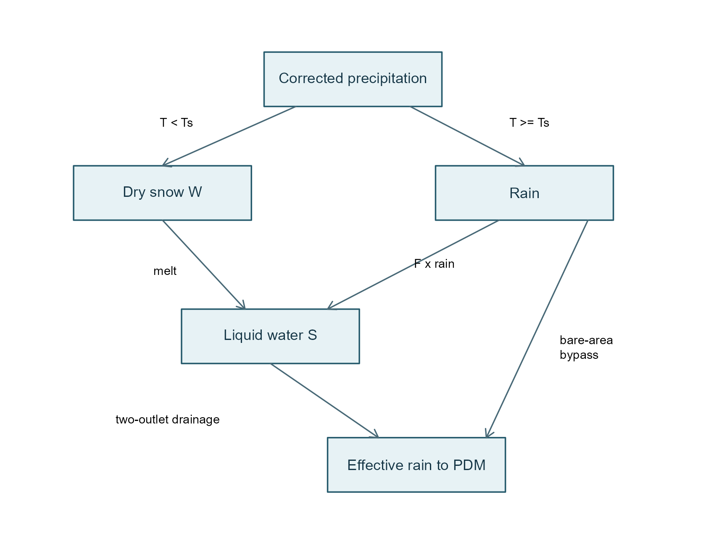
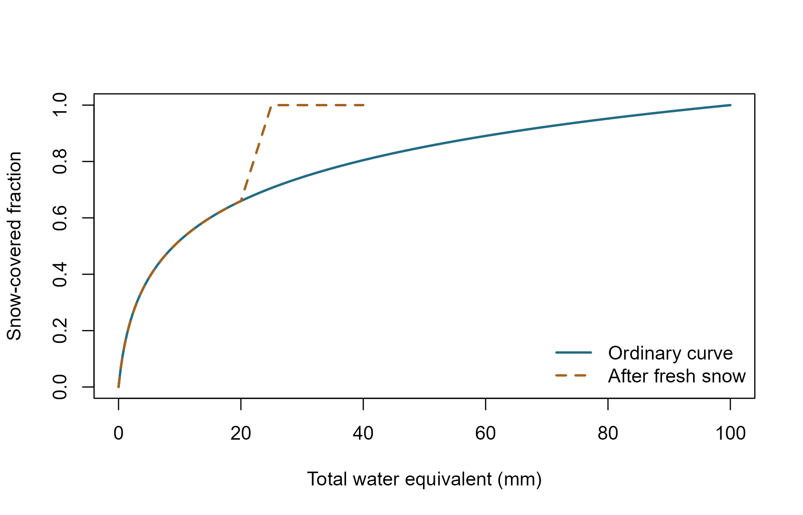

PACK explained: storing snow and releasing meltwater
pdmS7 documentation
snowpack-explained.RmdWhy snow needs its own stores
Snowfall does not immediately behave like rainfall. It can accumulate for days, melt later and briefly retain liquid water before draining. PACK represents this with a dry store (ice/snow expressed as water equivalent) and a wet store (liquid water inside the pack). A temperature rule partitions rain and snow; a second temperature rule controls melt. The model passes drainage and rain on bare ground to PDM as effective rainfall.

Snow delays precipitation before it reaches PDM. Rain on the snow-free fraction bypasses the pack.
Water equivalent is the depth of water obtained by melting the snow. 10 mm of water equivalent is not 10 mm of snow depth. Stores and fluxes are averaged over the catchment area, rather than being local depths over snow-covered patches.
The nine image parameters, plus implementation controls
pack_presets() defaults to the supplied parameter-file
image, not the adjacent typical-values table. The image omits time
units. Hourly rate units are assumed, not verified, and
must be confirmed before operational use. In particular, the wet-store
coefficients are used directly as inverse-hour rates; there is no
undocumented exponential conversion.
| Argument | Meaning | Image default | Unit |
|---|---|---|---|
precipitation_factor |
Multiplier for measured precipitation | 1 | dimensionless |
lower_rate_h |
Slow wet-store drainage coefficient | 0.00677 | h⁻¹, assumed |
upper_rate_h |
Additional drainage coefficient | 0.27095 | h⁻¹, assumed |
retention_fraction |
Liquid fraction setting the upper outlet level | 0.04 | fraction |
melt_factor_mmh_c |
Melt per degree above threshold, | 0.16667 | mm/h/°C, assumed |
adc_alpha |
Final fraction of a fresh-snow excursion over which cover reverts | 0.25 | fraction |
adc_depth_mm |
Water content for complete cover, | 100 | mm |
melt_threshold_c |
Melt threshold | 1 | °C |
snow_threshold_c |
Rain/snow threshold | 0 | °C |
drain_threshold_c |
Below this, drainage stops | 0 | °C; from report |
areal_depletion |
Allow partial snow cover | TRUE | logical |
max_step_min |
Largest internal accounting interval | 60 | minutes |
The separate report_daily preset converts the report’s
typical
/day,
/day
and
mm/day/°C to hours, and uses
,
°C. Those differences are real preset differences, not rounding
errors.
pack_presets("image_hourly")
#> $precipitation_factor
#> [1] 1
#>
#> $lower_rate_h
#> [1] 0.00677
#>
#> $upper_rate_h
#> [1] 0.27095
#>
#> $retention_fraction
#> [1] 0.04
#>
#> $melt_factor_mmh_c
#> [1] 0.16667
#>
#> $adc_alpha
#> [1] 0.25
#>
#> $adc_depth_mm
#> [1] 100
#>
#> $melt_threshold_c
#> [1] 1
#>
#> $snow_threshold_c
#> [1] 0
#>
#> $drain_threshold_c
#> [1] 0
#>
#> $areal_depletion
#> [1] TRUE
#>
#> $max_step_min
#> [1] 60
pack_presets("report_daily")[c(
"lower_rate_h", "upper_rate_h",
"melt_threshold_c", "snow_threshold_c"
)]
#> $lower_rate_h
#> [1] 0.00625
#>
#> $upper_rate_h
#> [1] 0.03541667
#>
#> $melt_threshold_c
#> [1] 0
#>
#> $snow_threshold_c
#> [1] 1One step, in equations and words
Let be corrected precipitation depth during one internal step of length hours. Let be its constant temperature, and the fraction covered by snow. The precipitation multiplier is applied before partitioning.
1. Rain or snow?
At the snow threshold itself, precipitation is rain. New snow enters and restores full cover for that step.
2. How much melts?
Temperature above the melt threshold supplies the melt demand. The area factor scales local melt potential to a catchment average, and the minimum prevents melting snow that is not there. At , melt is zero.
3. Fill the wet store and release drainage
Rain on covered area and newly melted water enter the wet store:
The lower outlet always drains slowly when drainage is permitted. The upper outlet adds drainage only above its moving threshold:
The second term is rain on bare ground; it bypasses the pack. Cold weather inhibits drainage, but does not turn stored liquid water back into ice in this implementation. Retention is a moving outlet threshold, not a rule that stops all drainage below it: the lower outlet can still drain.
A hand-checkable example
Take 10 mm of dry snow, full cover, 2 mm of rain, , , , , , and . Melt is 2 mm; dry storage becomes 8 mm; provisional wet storage is 4 mm. The threshold is mm, and drainage is mm. Final wet storage is 2.896 mm.
model <- FlodePackModel(
melt_factor_mmh_c = 1, lower_rate_h = 0.1,
upper_rate_h = 0.2, retention_fraction = 0.04, areal_depletion = FALSE
)
step <- pack_step(model, FlodePackState(dry_mm = 10),
precipitation_mm = 2, temperature_c = 3, dt = 1
)
step$flux[c("melt_mm", "drainage_mm", "dry_snow_mm", "wet_snow_mm")]
#> melt_mm drainage_mm dry_snow_mm wet_snow_mm
#> 2.000 1.104 8.000 2.896
stopifnot(abs(step$flux[["drainage_mm"]] - 1.104) < 1e-12)Partial cover and fresh-snow memory
A shallow pack need not cover the whole catchment. With total water content , the ordinary areal depletion curve is
Depths inside this empirical expression are numeric values in millimetres. Fresh snow temporarily restores cover to one. The state records the previous water content , previous cover and fresh-snow excursion . For and the implemented return path is
Below the anchor, return to . The empty pack has zero cover. With areal depletion disabled, any nonempty pack has full cover.

Illustrative fresh-snow excursion: cover remains complete until the final alpha fraction, then rejoins the ordinary curve. The x-axis is total water equivalent, not time.
Important implementation interpretation: the report gives prose and a diagram, not complete event logic. Here depletion means a fall in total pack water content, following Figure 2.2’s axis. Melt transferring water from to alone does not reduce that total. Consecutive undepleted snowfall grows one excursion; snowfall during depletion starts a new anchor. These choices, and catchment-area scaling of melt, require independent scientific review.
Substeps, conservation and coupling
pack_step() divides an interval into
This keeps the explicit drainage step stable; forcing is uniform within the interval. It is not an exact continuous-time solution. Shorter internal steps can change results, so test sensitivity. The snow-only residual is
When coupled, PDM’s fc still multiplies the effective
rain. Usually set it to one to avoid two precipitation corrections. If
not, pdm_correction_mm records the additional input
adjustment. The combined residual includes both stores and that
adjustment; it excludes the external PDM outlet term
qc.
| Task | Function / object |
|---|---|
| Choose and edit parameters |
pack_presets(), pack_from_config(),
FlodePackModel()
|
| Set initial dry, wet and cover-history state | FlodePackState() |
| Inspect one accounting step | pack_step() |
| Run snow without PDM | sim_pack() |
| Run snow and PDM together | sim_snow_pdm() |
snow <- sim_pack(c(10, 5, 0, 0), c(-2, -1, 3, 6))
snow[, c("dry_snow_mm", "wet_snow_mm", "effective_rain_mm"), with = FALSE]
#> dry_snow_mm wet_snow_mm effective_rain_mm
#> <num> <num> <num>
#> 1: 10.00000 0.0000000 0.000000000
#> 2: 15.00000 0.0000000 0.000000000
#> 3: 14.66666 0.3310833 0.002256712
#> 4: 13.83331 1.0035924 0.160840871
attr(snow, "water_balance")
#> [1] -7.719519e-16For restart, keep the whole
final_state: dry and wet depths alone do not preserve the
fresh-snow cover history. Coupled output contains a list with both
snow and pdm states. PET passes unchanged to
PDM; no snow-specific evaporation or sublimation process is implied.
Refreezing, cold content, elevation bands, wind effects and PACK survey
assimilation are not implemented.
Source and status
Institute of Hydrology, PACK: A Pragmatic Snowmelt Model for Real-time Use, NORA report 15304, equations 2.1–2.8, Figure 2.2 and Table 2.1. The implementation is independent; agreement with an IMFS/RFFS executable has not been established. Engineering tests do not replace parameter-unit confirmation or catchment validation.